Create an X, Y points layer from CSV

- Prepare a table containing rows that include at least fields for: Unique ID, Feature Name, Latitude, and Longitude.
- Lat & Long values should be in decimal degree format (NOT degrees, minutes, seconds, format)
Example of row with correct Lat & Long values:
23, Berlin, 52.500556, 13.398889In the preceding example, 23 = unique ID for Berlin, Berlin = Placename, 52.500556 = Lat, 13.398889 = Long
- Save this table in Comma Seperated Values format (CSV)
- From Manage Layers Toolbar, use the Add Delimited Text Layer tool and select the CSV file to generate a points layer.
- Save the points layer to a Shapefile (or other format) for geoprocessing.
1. Tabular data can be developed in various spreadsheet applications. We reccommend LibreOffice for it's handling of specific language character set encodings.
2. For our example, we downloaded the County File of Jamaican Placename Features from USGS Global Names Service Country Files
Download from: USGS Country Files.
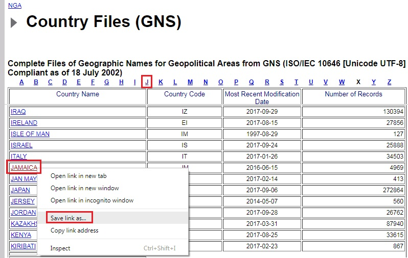
3. After saving the country file jm.zip to your working folder, double-click the .zip file to extract the contents. The complete set of placename features is in the file jm.txt. To make things simpler, we will use only the Populated Place features in jm_populatedplaces_p.txt, but we MUST first rename it to something like: jm.csv
4. After you have renamed the file to jm.csv, launch LibreOffice, and the Calc spreadsheet application
5. From the CALC application (not from WRITER or the default LibreOffice Suite!) click on the menu item File > Open and browse to your UNZIPPED and RENAMED file jm.csv then click OPEN
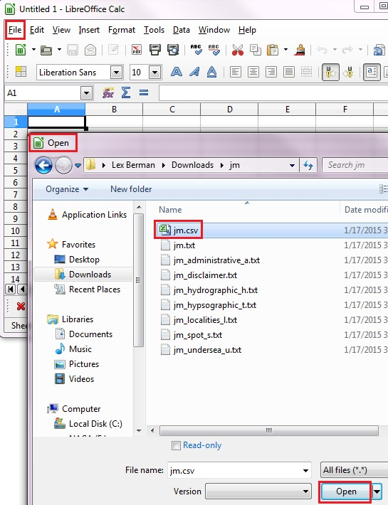
1. Set Character Set for your import file to Unicode UTF-8, USGS Country Files are UTF-8
2. Set the Separator (Delimiter) options. For this case check TAB delimiter.
3. Uncheck COMMA delimiter. (This prevents unexpected commas from creating new columns.)
4. If the fields seem to be delimited properly in the preview, click OK.
5. Currently QGIS imports CSV as UTF-8 Encoding. If you are using ANY OTHER encoding, create TWO tables: one for the LAT LONG import, and one to join the other character set attributes to the resulting points layer (see JOINS for details on how to accomplish the second JOIN process).
6. In the example shown below, the placenames are in UTF-8 encoding, so it is not necessary to create a second table. If the names were in Arabic (CP1256 encoding) for example, you should split the placename column into a second table (which MUST also have a column of unique Identifiers, which will serve as the JOIN ID)
7. In the jm.csv example, and for all GNS Country files, the UNIQUE ID field is "UNI" or Unique Name ID. Make sure you know which field contains your JOIN ID, and keep in mind that it must be a unique value for each row.
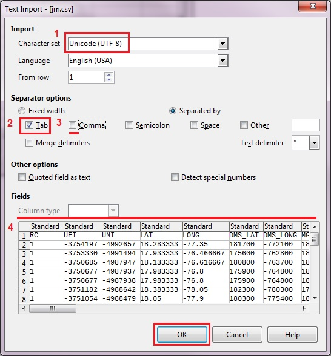
1. When the .csv is opened in LibreOffice, browse the table to check for possible import errors.
2. If the table looks okay, SAVE it as native OpenOffice format jm.ods
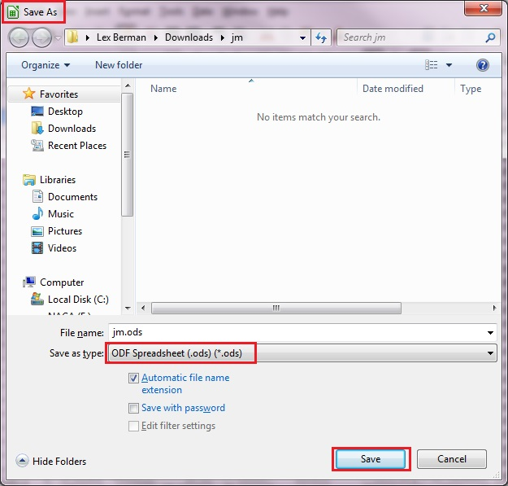
1. Make sure to Format the Cells for your Lat Long values with enough decimal places, so that saving to CSV does not trim off your most accurate values.
2. Then RESAVE the data as the .csv for importing to qgis, like jm_import.csv
3. The dialog will allow you to EXPLICITLY set the Encoding (change it to Unicode UTF8) and the Delimiter (change it to $). By using a $ delimiter, you can avoid errors caused by stray commas that might be in the cells
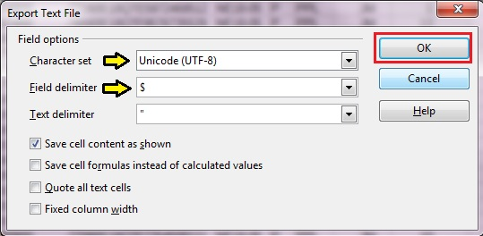
Because the x, y values you want to import must be in Decimal Degrees, be sure to RESET the CRS to plain WGS 84 (EPSG: 4326)
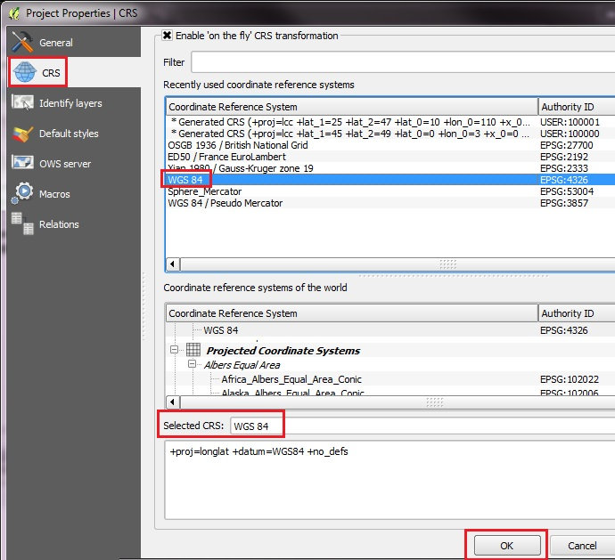
Go to Manage Layers Toolbar and click on the large COMMA icon to launch the ADD DELIMITED TEXT LAYER dialog.
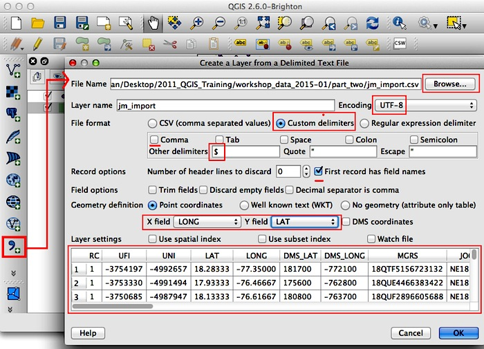
1. Browse to the CSV FILENAME you want to import, jm_import.csv
2. Set the Encoding, in this case UTF-8
3. Unset Comma delimiter, and choose CUSTOM DELIMITERS, (for the example type our $ delimiter into the OTHER DELIMITERS box)
4. If the correct delimiter is set, the preview window at the bottom will be correctly parsed into columns
5. Set the checkbox to accept the first line of the .csv file as the FIELD NAMES.
6. Now you want to set the Point Coordinates parameter, and make sure the X field and Y field values have been designated.
7. In the case of USGS Country Files, set the X field = LONG, and the Y field = LAT
8. X is generally used for the "horizontal" or degrees East and West of Longitude, while Y is use for the "vertical" degrees North and South of Latitude.
9. When the preview looks okay and you have set your X, Y fields, hit OK
10. You will be prompted to specify the Coordinate Reference System (or projection) for the imported x, y coordinates.
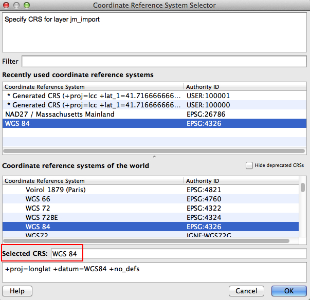
1. In the case of plain decimal degrees, click on the option WGS84, also called EPSG:4326. If you don't see this available under "Recently Used" options, then put your cursor into the FILTER form and type "WGS" into the form. Select EPSG:4326 from the results.
2. Note: WGS 84 Pseudo Mercator is a specialized projection which is equivalent to the so-called Google Spherical Mercator. You don't want to use this EPSG:3857 for loading decimal degree points from .csv. EPSG:3857 is really only appropriate for adding Google and other basemaps with the OpenLayers Plugin.
3. With the correct CRS selected, hit Okay, and the points should appear as a new data layer in the QGIS Layer List and the Map View.
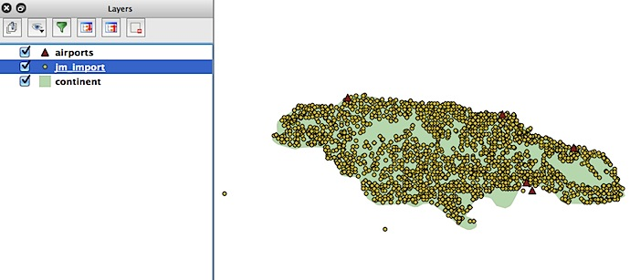
1. The imported x, y values will now be converted to point features (in WGS84 coordinate system)
2. Right-click on the layer to Open the Attribute Table, and make sure the tabular data was imported
3. Check the Number of Features on the top bar of the attribute to make sure all were mapped
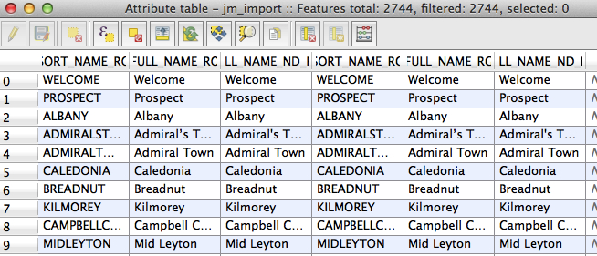
Note: you may encounter problems if the field delimiters (such as COMMAS) have been used within the fields and wrappers such as Double-quotes were not used in the original CSV file. Sometimes it may be necessary to massage the .csv file in order to eliminate uses of the cell delimiters within FIELDS.
Usually this can be accomplished by adjusting the EXPORT to CSV settings in Libre Office and saving out to a new version of the .csv file with specific field delimiters (SEPARATED BY) and text wrapper (TEXT DELIMITER) settings.
In other words, if commas in your text are a problem, use a custom delimiter like SEPARATED BY = $ and use the TEXT DELIMITER = ", then export to a new .csv file and try to add the layer to QGIS again using those settings. That is the full procedure described above.
Usually this can be accomplished by adjusting the EXPORT to CSV settings in Libre Office and saving out to a new version of the .csv file with specific field delimiters (SEPARATED BY) and text wrapper (TEXT DELIMITER) settings.
In other words, if commas in your text are a problem, use a custom delimiter like SEPARATED BY = $ and use the TEXT DELIMITER = ", then export to a new .csv file and try to add the layer to QGIS again using those settings. That is the full procedure described above.
After importing from CSV, you should always right click on the layer and SAVE AS a SHAPEFILE for further use.
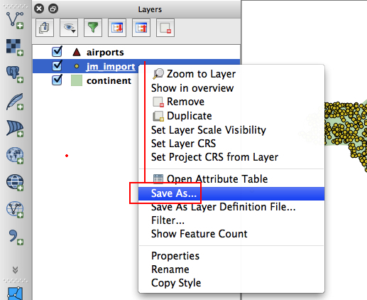
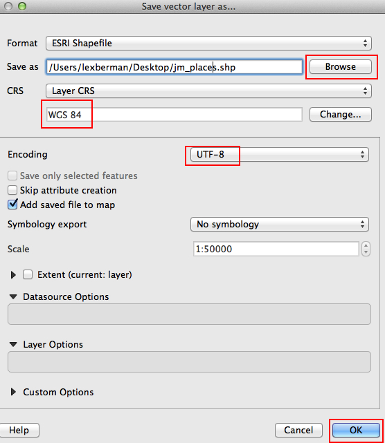
After exporting to SHP, right click to remove the DELIMITED TEXT LAYER (jm_import.csv) from the Layer List.
By default the SHP layer will be added on TOP of the CSV import layer. Even though they have the same layer name, you can safely remove the CSV layer (the bottom layer).
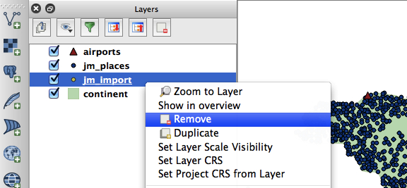
The new SHP layer should already have been added to the Layer List. Or you can always use the ADD VECTOR layer tool to add your new Shapefile (jm_places.shp).
Now you should be able to run spatial analysis tools and other operations on the Shapefile, which would not have been possible using the .csv file added as delimited text layer.
Proceed to Add WMS Layer Instructions